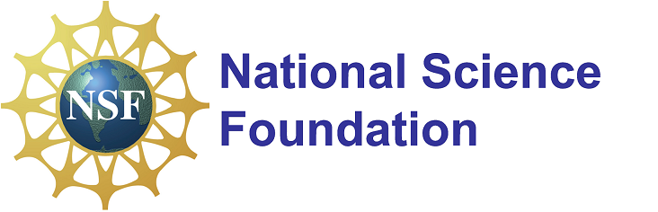

Sponsor (Acknowlegement of Support)
Any opinions, findings, and conclusions or recommendations expressed in this project are those of the author(s) and do not necessarily reflect the views of the National Science Foundation.

Award Information
CNS-1745894: TWC: Small: Privacy Preserving Cooperation among Microgrids for Efficient Load Management on the Grid
Award Duration: 09/01/2017-08/31/2021
Award Amount: $477,483
Project Abstract
Smart grid integrates sensors and communication infrastructure into the existing power grid to enable operational intelligence. The concept of microgrid is emerging in conjunction with the smart grid wherein small segments of the grid can be isolated into self-sufficient islands to feed their own demand load with their local energy, e.g., wind, solar. To date, microgrids begin to develop cooperative models for further improving the performance of global and local load management, such as global/local load balancing, energy exchange, and power transmission network topology design/upgrade with the integration of microgrids. However, all the cooperation among microgrids requests them to explicitly share their local sensitive grid operational information for global performance optimization, and thus compromises the privacy of microgrids. Then, microgrids' privacy concerns would impede the development and implementation of the cooperative models such that significant benefits via microgrids' cooperation on the power grid may not be available. This project tackles the privacy concerns in such cooperation, and enables microgrids to efficiently manage their local loads as well as facilitate the main grid to manipulate the global load with limited disclosure.
This project proposes a suite of novel privacy preserving cooperative models/techniques for distributed microgrids to efficiently advance load management on the power grid. Provable privacy/security is ensured in the end-to-end process of cooperation, including privately analyzing data collected from different microgrids and privately implementing the schemes/solutions derived from the cooperative models, by composing cryptographic primitives with the secure multiparty computation (SMC) theory and/or imposing defined rigorous privacy notions. Ensuring privacy protection with rigorous standards will allow data to be collected and used in ways that were prohibitive earlier due to the privacy concerns, and then improve both operational efficiency and user acceptance. Load management via privacy preserving cooperation further optimally allocates distributed energy and minimizes the transmission and storage costs in a more secure, reliable and efficient smart grid infrastructure. This project also integrates research and education by exciting undergraduates to join the Science, Technology, Engineering and Math (STEM) research.
Team Members
PI: Yuan Hong
Team Members: Shangyu Xie, Bingyu Liu, Han Wang, Nicolas Rizzo, Sanjay Goel
Representative Prototypes (infographic to be added)
1. Privacy Preserving Smart Meter Streaming
2. Privacy Preserving Distributed Load Balancing
3. Privacy Preserving Distributed Energy Trading
4. Privacy Preserving Double Auction for Divisible Resources (e.g., Energy)
5. Privacy Preserving Double Auction for Divisible Resources (e.g., Energy) with TEE
Related Publications
- Bingyu Liu, Yuanzhou Yang, Rujia Wang and Yuan Hong, Privacy Preserving Divisible Double Auction with A Hybridized TEE-Blockchain System, in Proceedings of the 41st IEEE International Conference on Distributed Computing Systems (ICDCS'21), Virtual, July 7-10, 2021.
- Bingyu Liu, Shangyu Xie and Yuan Hong, Efficient and Private Divisible Double Auction in Trusted Execution Environment, in Proceedings of the International Conference on Applied Cryptography in Computer and Communications (AC3'21), Virtual, May 15-16, 2021. [Inivted for Journal Publication]
- Shangyu Xie, Han Wang, Yuan Hong and My Thai, Privacy Preserving Distributed Energy Trading, in Proceedings of the 40th International Conference on Distributed Computing Systems (ICDCS'20), Singapore, July 8-10, 2020.
- Bingyu Liu, Shangyu Xie and Yuan Hong, Privacy-Aware Double Auction for Divisible Resources without a Mediator, in Proceedings of the 19th International Conference on Autonomous Agents and Multiagent Systems (AAMAS'20), Auckland, New Zealand, May 9-13, 2020.
- Shangyu Xie, Yuan Hong and Peng-Jun Wan, PAIRING: Privately Balancing Multiparty Real-time Supply and Demand on the Power Grid, IEEE Transactions on Information Forensics and Security (TIFS), Vol. 15, pp. 1114-1127, 2020. [Impact Factor: 6.211]
- Shangyu Xie, Yuan Hong and Peng-Jun Wan, A Privacy Preserving Multiagent System for Load Balancing in the Smart Grid, in Proceedings of the 18th International Conference on Autonomous Agents and Multiagent Systems (AAMAS '19), Montreal, Canada, May 13-17, 2019.
- Shangyu Xie, Han Wang, Shengbin Wang, Haibing Lu, Yuan Hong, Dong Jin and Qi Liu, Discovering Communities for Microgrids with Spatial-Temporal Net Energy, Journal of Modern Power Systems and Clean Energy (MPCE), Vol. 7(6), pp. 1536-1546, Springer, 2019. [Impact Factor: 3.1]
- Yuan Hong, Han Wang, Shangyu Xie and Bingyu Liu, Privacy Preserving and Collusion Resistant Energy Sharing, in Proceedings of the IEEE International Conference on Acoustics, Speech, and Signal Processing (ICASSP'18), Calgary, Canada, April 22-27, 2018.
- Yuan Hong, Sanjay Goel, Haibing Lu and Shengbin Wang, Discovering Energy Communities for Microgrids on the Power Grid, in Proceedings of the IEEE International Conference on Smart Grid Communications (SmartGridComm'17), Dresden, Germany, Oct 23-26, 2017. [PDF]
- Yuan Hong, Wen Ming Liu and Lingyu Wang, Privacy Preserving Smart Meter Streaming against Information Leakage of Appliance Status, IEEE Transactions on Information Forensics and Security (TIFS), Vol. 12(9), pp. 2227-2241, 2017. [PDF, Impact Factor: 6.211]
- Yuan Hong, Shengbin Wang and Ziyue Huang, Efficient Energy Consumption Scheduling: Towards Effective Load Leveling, Energies Journal, Vol. 10(1), 2017. [PDF, Impact Factor: 2.702]
- Yuan Hong, Sanjay Goel and Wen Ming Liu, An Efficient and Privacy Preserving Scheme for Energy Exchange among Smart Microgrids, International Journal of Energy Research (IJER), Vol. 40(3), pp. 313-331, March 2016, Wiley. [Impact Factor: 3.741]
- Yuan Hong, Wen Ming Liu and Lingyu Wang, Privacy-preserving Smart Meter Streaming Against Inference Attacks, the 37th IEEE Symposium on Security and Privacy (Oakland'16 Poster), San Jose, CA, 2016. [Poster Abstract, IEEE]
- Sanjay Goel, Yuan Hong, Vagelis Papakonstantinou and Dariusz Kaloza, Smart Grid Security, Springer, London, ISBN 978-1-4471-6662-7, 129 pages, 2015.